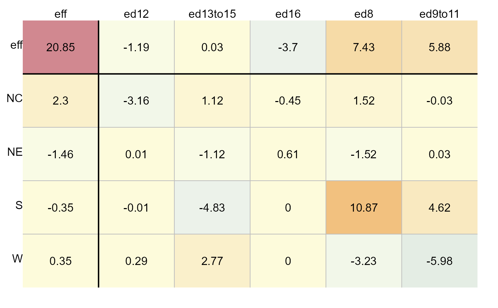
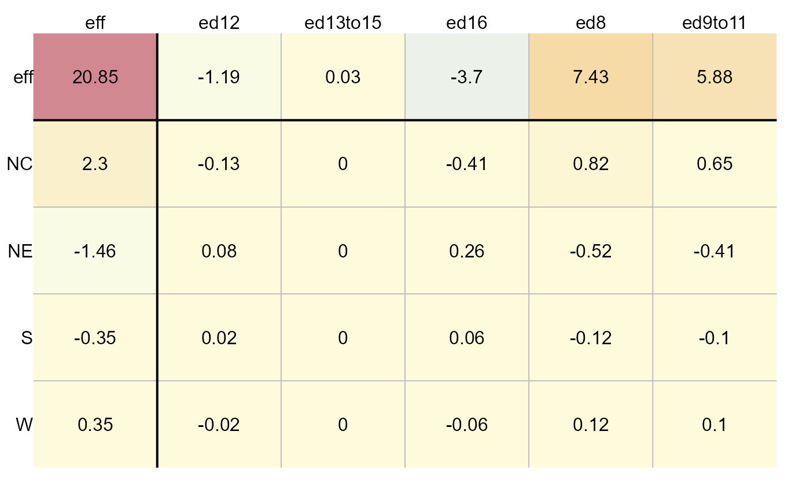
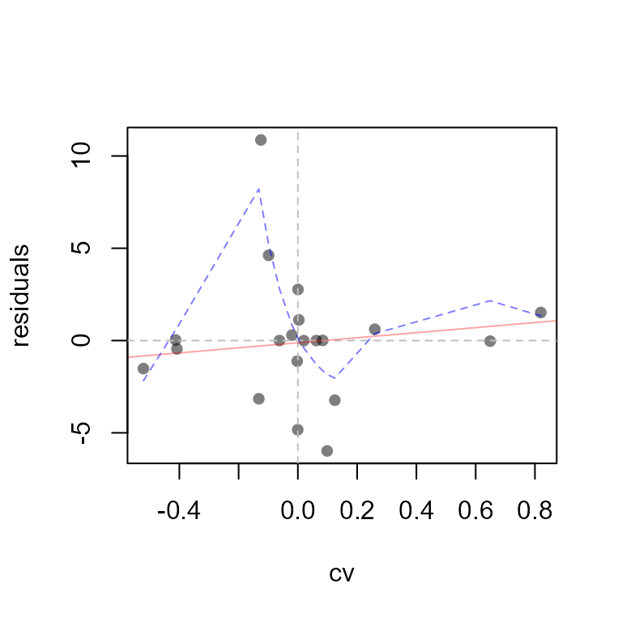

plot.eda_pol A plot method for lists of eda_polish class.
Usage
# S3 method for eda_polish
plot(
x,
type = "residuals",
add.cv = FALSE,
k = NULL,
col.quant = FALSE,
colpal = "RdYlBu",
colrev = TRUE,
col.eff = TRUE,
col.com = TRUE,
adj.mar = FALSE,
res.size = 1,
row.size = 1,
col.size = 1,
res.txt = TRUE,
label.txt = TRUE,
...
)Arguments
- x
A list of class eda_polish
- type
Plot type. One of three: "residuals", "cv" or "diagnostic".
- add.cv
Whether to add kCV to the model when plotting "residuals"
- k
Custom k to use if kCV is to be added to model. A value of NULL makes us of slope.
- col.quant
Boolean indicating if a quantile classification scheme should be used
- colpal
Color palette to adopt (should be one listed in hcl.pals())
- colrev
Should color palette be reversed? (default TRUE)
- col.eff
Boolean indicating if effects and common value should contribute to color gradient
- col.com
Boolean indicating if common value should contribute to color gradient
- adj.mar
Boolean indicating if margin width needs to accommodate labels
- res.size
Size of residual values in plot [0-1]
- row.size
Size of row effect values in plot [0-1]
- col.size
Size of column effect values in plot [0-1]
- res.txt
Boolean indicating if values should be added to plot
- label.txt
Boolean indicating if margin and column labels should be plotted
- ...
Arguments to be passed to subsequent methods
Details
The function plots a polish table of residuals or CV values. I will
also generate a diagnostic plot if type is set to diagnostic
Examples
# Create dataset
df <- data.frame(region = rep( c("NE", "NC", "S", "W"), each = 5),
edu = rep( c("ed8", "ed9to11", "ed12", "ed13to15", "ed16"), 4),
perc = c(25.3, 25.3, 18.2, 18.3, 16.3, 32.1, 29, 18.8,
24.3, 19, 38.8, 31, 19.3, 15.7, 16.8, 25.4, 21.1, 20.3, 24, 17.5))
# Generate median polish output
out <- eda_pol(df, row = region, col = edu, val = perc, plot = FALSE)
# Plot table
plot(out, type = "residuals")

# Plot table using CV values
plot(out, type = "cv")

# Generate diagnostic plot
plot(out, type = "diagnostic")

#> $slope
#> cv
#> 1.3688
#>